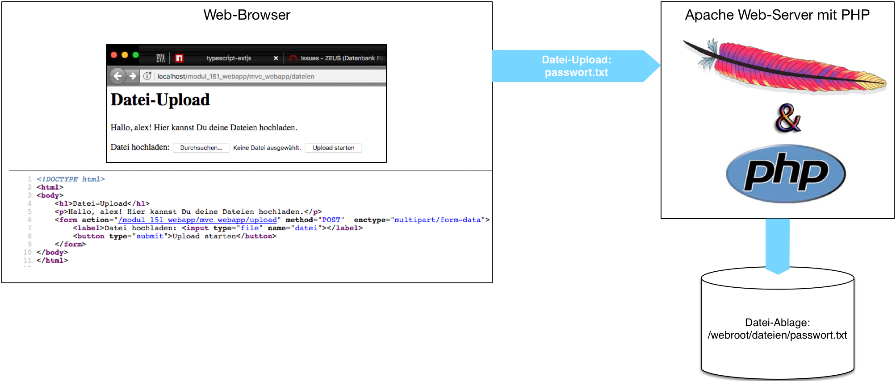
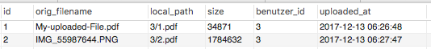
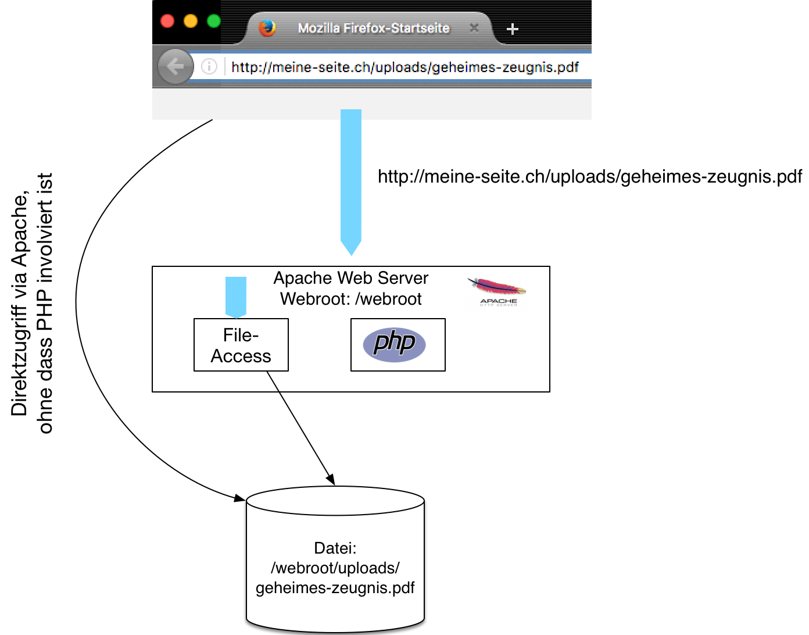

{% extends "../_base_template.html" %}
{% block title %}Lektion 13 - Dateien behandeln / schützen {% endblock %}

{% block sections %}
<section data-markdown>
<textarea data-template>
<i class="fas fa-graduation-cap"></i> M151 - DB in Web-App einbinden
=============================

Heutiges Ziel
--------------

*  Sie wissen, wie Sie in PHP Dateien hochladen und speichern
*  Sie wissen, wie Sie in PHP Dateien ausliefern
*  Sie kennen die Problematik von Direkt-Links via Webserver auf schützenswerte Dateien
*  Sie kennen Schutzmechanismen, um das direkte Ausliefern von Dateien zu verhindern
</textarea>
</section>

<section data-markdown>
<textarea data-template>
<i class="fas fa-graduation-cap"></i> Dateien hochladen
=============================

**Wir laden Dateien in unsere Applikation hoch**

Um Dateien in einer Web-Applikation hochzuladen, bedarf es:
* im Frontend (HTML): Ein HTML-Formular mit Encoding „multipart/form-data“ und mind. einem Dateifeld <br />(`<input type="file" />`)
* im Backend (PHP): ein Programmteil, welcher die Datei entgegennimmt und speichert:
  
</textarea>
</section>

<section data-markdown>
<textarea data-template>
<i class="fas fa-graduation-cap"></i> Dateien hochladen
=============================

## HTML-Formular (multi-page app, POST-Request)

Das zugehörige HTML-Formular sieht so aus:

```
<&#8203;!DOCTYPE html>
<&#8203;html>
<body>
    <h1>Datei-Upload</h1>
    <p>Hallo, alex! Hier kannst Du deine Dateien hochladen.</p>
    <form action="/modul_151_webapp/mvc_webapp/upload" method="POST" enctype="multipart/form-data">
        <label>Datei hochladen: <input type="file" name="datei" /></label>
        <button type="submit">Upload starten</button>
    </form>
</body>
<&#8203;/html>
```

Wichtig sind hier die Angaben:
*  `action=""`: Wohin wird der Upload-Request / die Datei geschickt?
*  `method="POST"`: Dateien können nur via http POST hochgeladen werden
*  `enctype="multipart/form-data"`: Dies definiert das Format des POST-Requests und ist für File-Uploads zwingend.

## Dateien hochladen in einer Single Page App mittels AJAX

In einer Single Page App ist das nicht so einfach: Sie wollen ja nicht einen POST-Request absetzen, der Ihre Seite neu lädt. Hier müssen Sie
auf die JavaScript File-API zurückgreifen, resp. auf Ihre Fronted-Framework-Funktionalität:

https://developer.mozilla.org/en-US/docs/Web/API/File/Using_files_from_web_applications

(zum selber studieren. Siehe Kapitel "Example: Uploading a user-selected file")
</textarea>
</section>

<section data-markdown>
<textarea data-template>
<i class="fas fa-graduation-cap"></i> Dateien hochladen
=============================

Nach Absenden (Button „Upload starten“) nimmt unser PHP-Script die Datei entgegen und speichert sie ab:

```php
public function upload(Request $req) {
    header('Content-type: text/plain');
    // Datei-Uploads in PHP werden im Super-Global "$_FILES" geliefert:
    // Jedes File-Form-Field hat einen Dictionnary-Eintrag, in diesem Fall $_FILES['datei']:
    var_dump($_FILES['datei']);

    // Prüfen, ob das File korrekt hochgeladen wurde:
    $ok = $_FILES['datei']['error'] === 0;
    if ($ok) {
        // Datei sicher speichern:
        // tmp_name beinhaltet den Datei-Pfad zum hochgeladenen File:
        $upload_pfad = $_FILES['datei']['tmp_name'];

        // 'name' beinhaltet den Originalnamen des Files
        $upload_filename = $_FILES['datei']['name'];

        // BEISPIEL: Zielpfad zusammenstellen / ermitteln, hier wird das File in ein Unterverzeichnis
        // mit dem Usernamen gespeichert:
        $username = $_SESSION['userinfo']['login'];
        $datei_dir = __DIR__.'/../../../uploads/'.$username;
        $zielpfad = $datei_dir.'/'.$upload_filename;
        if (!is_dir($datei_dir)) {
            mkdir($datei_dir);
        }
        // move_uploaded_file prüft, ob das angegebene File ein korrektes Upload-File ist
        // und verschiebt es an den angegebenen Zielpfad:
        move_uploaded_file($upload_pfad,$zielpfad);
        echo "Datei gespeichert in {$zielpfad}";
    }
}
```

*  Dateien von Formularen werden in PHP im Super-Globals-Array "$_FILES" geliefert.
*  Diese Superglobal stellt Informationen zu den hochgeladenen Dateien bereit (Upload-Pfad, originaler Dateiname, ev. Fehler). <br />
   <i class="far fa-hand-point-right"></i> Siehe http://php.net/manual/de/features.file-upload.post-method.php.
*  Ein hochgeladenes File kann dann mit der PHP-Funktion "move_uploaded_file()" in das gewünschte Zielverzeichnis / Zielname verschoben werden.<br />
   <i class="far fa-hand-point-right"></i> Siehe http://php.net/manual/de/function.move-uploaded-file.php.
</textarea>
</section>

<section data-markdown>
<textarea data-template>
<i class="fas fa-graduation-cap"></i> Dateien hochladen
=============================
<i class="far fa-hand-point-right"></i> Da das File nun im Webroot liegt, kann es auch direkt vom Web-Server, ohne den „Umweg“ über PHP,
ausgeliefert werden. Jeder, der den Web-Pfad kennt, kann das File downloaden. **Dies ist unter Umständen problematisch,
wenn die Dateien sensitive Informationen beinhalten.**

Wir werden diese Problematik gleich anschauen.
</textarea>
</section>

<section data-markdown>
<textarea data-template>
<i class="fas fa-graduation-cap"></i> Dateien hochladen
=============================

**Speichern von Verweisen der Dateien in einer Datenbank-Tabelle**

Je nach Problemstellung macht es Sinn, Meta-Informationen zu den gespeicherten Dateien in einer Datenbank-Tabelle festzuhalten, **z.B.:**

*  um den lokalen Pfad zu speichern / den ursprünglichen Dateinamen festzuhalten
*  um Dateigrössen zu berechnen (bsp: „Quota“ pro User)
*  um Autorisation zu ermöglichen: wem gehört die Datei, wer hat Zugriff darauf
*  um Informationen über die Datei zu speichern (Bilddimension, MIME-Typ, ….)
*  um Zeitstempel (z.B. Hochladedatum, für Validitätsprüfung) festzuhalten

Nach dem Hochladen verzeichnen Sie die Datei in der Datenbank, z.B.:

```sql
-- Orig-Filename: $_FILES['input-name']['name']
-- Dateigrösse  : $_FILES['input-name']['size']

-- SQL für Beispieltabelle „files“, siehe unten:
INSERT INTO files (`orig_filename`,`local_path`,`size`,`benutzer_id`,`uploaded_at`)
VALUES ('IMG_3436782.png','3/88.png',33898476,3,NOW());
```

</textarea>
</section>

<section data-markdown>
<textarea data-template>
<i class="fas fa-graduation-cap"></i> Dateien hochladen
=============================

**Problematik: Direktzugriffe auf Dateien / Dateien im Webroot**

Oben haben wir gesehen, dass die Dateien beim Hochladen in einem Folder innerhalb des Webroot des Webservers abgelegt wurden.
Dateien im Webroot des Webservers können ohne weitere Massnahme Seitens des Entwicklers auch wieder direkt vom Webserver via URL
ausgeliefert werden:


Dies ist problematisch:

* Jeder, der den Link kennt, kann die Dateien herunterladen
* Die Dateien können sogar von Suchrobotern indiziert und gelesen werden
* Sensitive Daten sind so völlig ungeschützt.
* Sie können die Autorisation nicht sicherstellen (WER darf das File herunterladen)

</textarea>
</section>

<section data-markdown>
<textarea data-template>
<i class="fas fa-graduation-cap"></i> Dateien hochladen
=============================

**Problematik: Direktzugriffe auf Dateien / Dateien im Webroot**

Für sensitive oder nicht öffentliche Daten muss der Direktzugriff verhindert werden. Es muss also die **Autorisation** sichergestellt werden können.

Dazu sind folgende Massnahmen zu treffen:
1. Das Ausliefern der Dateien direkt via Web-Server muss verhindert werden. Dies kann auf folgende Arten geschehen:
    * durch Zugriffsberechtigung durch den Webserver (Stichwort: „Deny from all“ in Apache-.htaccess-Direktive) <br />
    Beispiel in Apache .htaccess-file: <br />
    `Require all denied`
    * durch Platzieren der Dateien ausserhalb des Webserver-Webroots

2. Die Auslieferung muss nun durch die Applikation (in diesem Fall durch PHP) erfolgen: Somit hat man die Möglichkeit, Zugriffsberechtigungen zu prüfen.
</textarea>
</section>

<section data-markdown>
<textarea data-template>
<i class="fas fa-graduation-cap"></i> Dateien hochladen
=============================
**Wir liefern Dateien via PHP aus**

Die Auslieferung durch die server-seitige Applikation, in diesem Beispiel von PHP, hat folgende Vorteile:

*  Die Authentizität des Zugriffs kann geprüft werden (Ist der Benutzer angemeldet?)
*  Die Autorisation kann sichergestellt werden (Darf der angemeldete Benutzer die Datei lesen?)

Die Auslieferung erfolgt somit nicht mehr direkt durch den Web-Server, sondern durch unsere Applikation.
Da wir nun nicht mehr direkt die Datei in der URL aufrufen, sondern unser serverseitiges Script / URL,
muss die angeforderte Datei anderweitig angegeben werden:

* entweder als **Pfad in einem Request-Parameter** <br />(Bsp: `http://meine-seite.ch/download?filename=geheimes-zeugnis.pdf`)
* oder als **Teil einer URL-Route**, welche Sie in einen Controller / Action leiten:
    <br />`http://meine-seite.ch/download/route/geheimes-zeugnis.pdf`<br />
    Hierbei können Sie den Pfad entsprechend aus der Route heraus extrahieren.
</textarea>
</section>

<section data-markdown>
<textarea data-template>
<i class="fas fa-graduation-cap"></i> Dateien hochladen
=============================

Im Beispiel wird dazu ein HTTP-GET-Parameter verwendet:


```php
# Request: http://meine-seite.ch/download?filename=geheimes-zeugnis.pdf
public class MyController {
   // Download-Action-Methode in Controller:
   public function downloadAction() {
        // Dateiname aus Request lesen und korrekten Pfad ermitteln:
        $filename = $_GET['filename'];
        $pfad = '/pfad/zu/den/dateien/'.$filename;

        // Benutzer-Authentizität und -Autorisation prüfen:
        if (user_is_logged_in_and_can_access_the_file($filename)) {
            // Content-Type ermitteln:
            $type = mime_content_type($pfad);

            // Datei mit korrekten Headern ausliefern:
           header("Content-Type: ${type}");
           header("Content-Disposition: attachment; filename=\"$pfad\"");
           // Ausgeben der Datei:
           readfile($pfad);
        } else {
            echo "Zugriff verweigert!";
        }
   }
}
```
</textarea>
</section>

<section data-markdown>
<textarea data-template>
<i class="fas fa-graduation-cap"></i> Dateien hochladen
=============================

Das sehr minimalistische Beispiel oben zeigt den Vorgang für eine Auslieferung via PHP:

1. Der Benutzer ruft die URL zum Download-Script auf, und übermittelt den gewünschten Dateinamen als GET-Parameter
2. Der Dateiname wird aus den Request-Parametern ermittelt und der tatsächliche Dateipfad im Dateisystem ermittelt.
3. Die Zugriffs-Authentizität und Autorisation wird geprüft (bsp: Ist der User eingeloggt, und darf dieser die Datei downloaden?)
4. Die Datei wird ausgeliefert (php: readfile). Damit der Browser diesen Download korrekt entgegennehmen kann, muss der Datei-Typ („Mime-Type“, Internet Media Type, siehe https://de.wikipedia.org/wiki/Internet_Media_Type) und die Download-Anweisung (Content-Disposition-Header) als HTTP-Response-Header ausgegeben werden.

**Achtung: Passen Sie auf, dass Sie hier kein Einfallstor für _Directory Traversal_-Attacken öffnen! Prüfen Sie
   den angegebenen Dateinamen und normalisieren Sie ihn!** (z.B. "../../../../etc/passwd" in "passwd" wandeln)
</textarea>
</section>

<section data-markdown>
<textarea data-template>
<i class="fas fa-graduation-cap"></i> Wissenskontrolle Datei-Behandlung
=============================

Auf Moodle finden Sie den Test "Wissensüberprüfung Dateien behandeln" unter 18.11.2020.
Führen Sie diesen Test durch und beantworten Sie die Testfragen.

Dieser Test wird nicht benotet.
</textarea>
</section>
{% endblock %}
